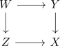

tor independent square of schemes
Definition
Let

be a pullback square of schemes Then it is called tor independent, if $\mathcal{O}_{Y}$ and $\mathcal{O}_{Z}$ are tor independent quasi-coherent modules
Let

be a pullback square of schemes Then it is called tor independent, if $\mathcal{O}_{Y}$ and $\mathcal{O}_{Z}$ are tor independent quasi-coherent modules